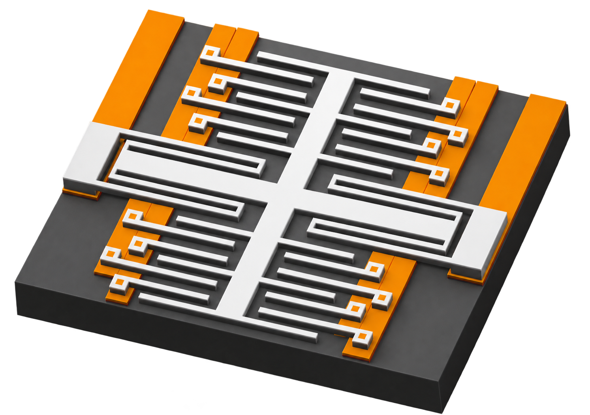

full press kit
The one-page press sheet, both cuts of the wordmark and the three renders at full resolution, plus the usage rules. One download.
downloadpress // kit & boilerplate
Everything you need to describe AfterCore accurately: the facts, ready-made boilerplate, the marks and the renders. Download it, use it, no email wall.
last updated 13 october 2026
press contact — trix@aftcre.com (subject: press)
The one-page press sheet, both cuts of the wordmark and the three renders at full resolution, plus the usage rules. One download.
downloadThe studio on one printable page — who, what, specs and contact.
open the pdfThe board render sized for link previews, if you need one.
downloadboilerplate
Three lengths. All true as of the date above — if a stage changes, this page changes with it.
AfterCore is a small hardware studio designing ultra-light magnesium-alloy peripherals in house. Its flagship X40G mouse targets 40 g with FLARE magnetic switch sensing.
AfterCore is an independent, non-seeded hardware studio that designs ultra-light magnesium-alloy peripherals end to end: mechanical CAD, PCB, materials and rapid prototyping all happen in house. The flagship X40G is a 40 g class mouse with FLARE magnetic switch sensing, a PAW 3950 sensor and 8 kHz polling. It is in prototyping.
AfterCore is an independent hardware studio based in Italy, designing ultra-light magnesium-alloy peripherals end to end. Mechanical design, PCB layout, materials selection and rapid prototyping all happen under one roof, so nothing is lost between the shell and the board. The studio's flagship is the X40G, a mouse targeting 40 g: a thin-wall magnesium-alloy shell, FLARE — force linear adaptive regulable engine — magnetic switch sensing with no mechanical contacts, a PAW 3950 optical sensor and 8 kHz polling. The X40G is in prototyping, not yet in production. The studio is currently non-seeded and opening pre-seed and seed conversations.
the facts
Targets are labelled as targets. Nothing here is a measured production figure, because there is no production line yet.
// the x40g
// the studio
AfterCore is not affiliated with, endorsed by or connected to PixArt Imaging Inc. PAW 3950 is a PixArt Imaging product; its trademarks are the property of their owners.
marks & images
Do not recolour, stretch or add effects to the marks. The renders are of prototypes — caption them as prototypes, not as a shipping product.
The compact mark, for dark backgrounds. Transparent PNG.
downloadThe extended wordmark, for white or light backgrounds. Transparent PNG.
downloadThe X40G board render, transparent PNG.
downloadThe internal assembly render, transparent PNG.
download
brand
A near-black ink with one hot accent on it. No gradients, no second accent, no white page behind the wordmark.
Three in-house typefaces. Aftcre Main is the display face — page titles and oversized numerals only, never body copy. Aftcre Standard and Aftcre Secondary are the reading faces. None of them are licensed for outside use: set your own copy in your own typefaces and use the marks for branding.
usage
Write about us freely. These are the limits, and they exist mostly to stop someone claiming we work together when we do not.
// press
An interview, a higher-resolution image, a clarification — ask and it is sent.